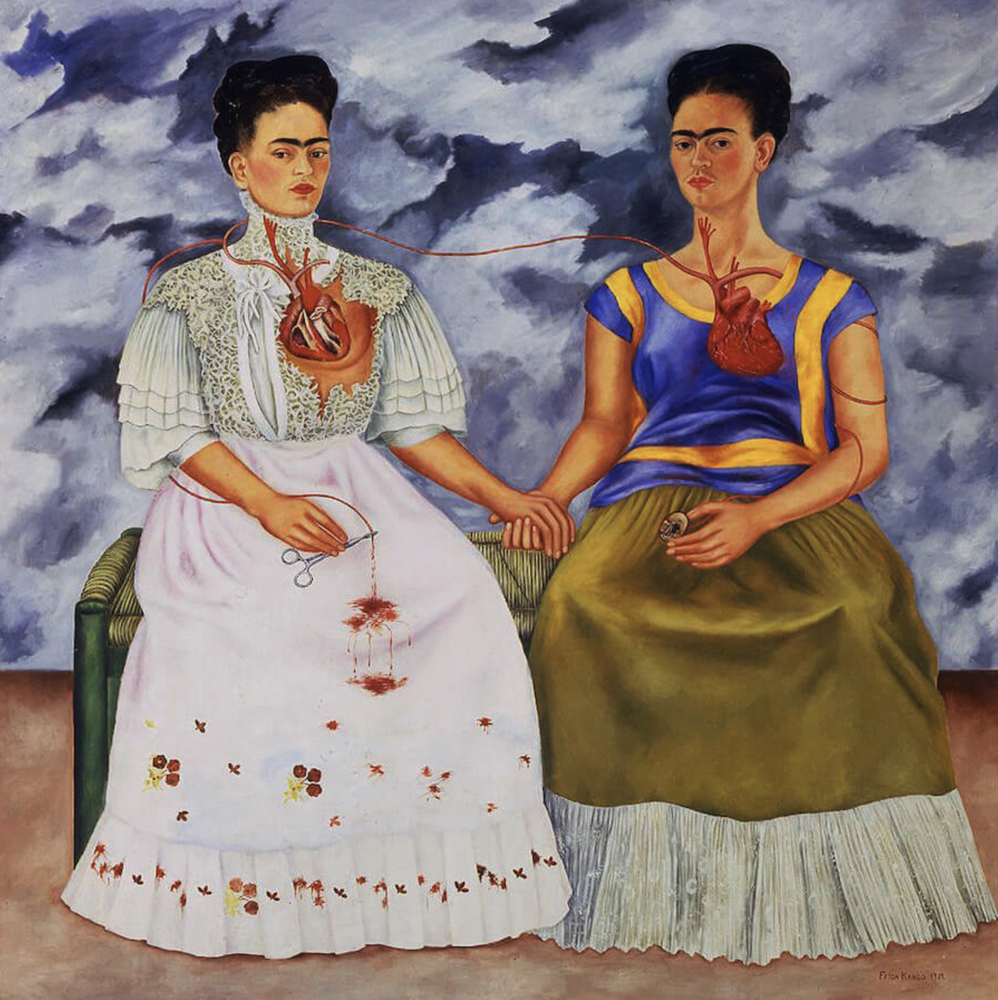

Culture & Traditions
Holidays

Día de los Muertos is a vibrant Mexican holiday on November 1-2 where families honor and celebrate deceased loved ones by welcoming their spirits back with festive altars (ofrendas) filled with marigolds, photos, favorite foods, and candles
Music

Mariachi is a vibrant, traditional mexican musical genre, symbolizing mexican culture with its beautiful sounds of violins, trumpets, guitars and vocals, known fof lively preformances and cowboy attire.
Art
Mexican art is a rich, diverse tradition known for vibrant colors, bold themes, and significant movements like Muralism (Kahlo), influential prints (Posada), and unique folk art, exploring national identity, history, and social issues.